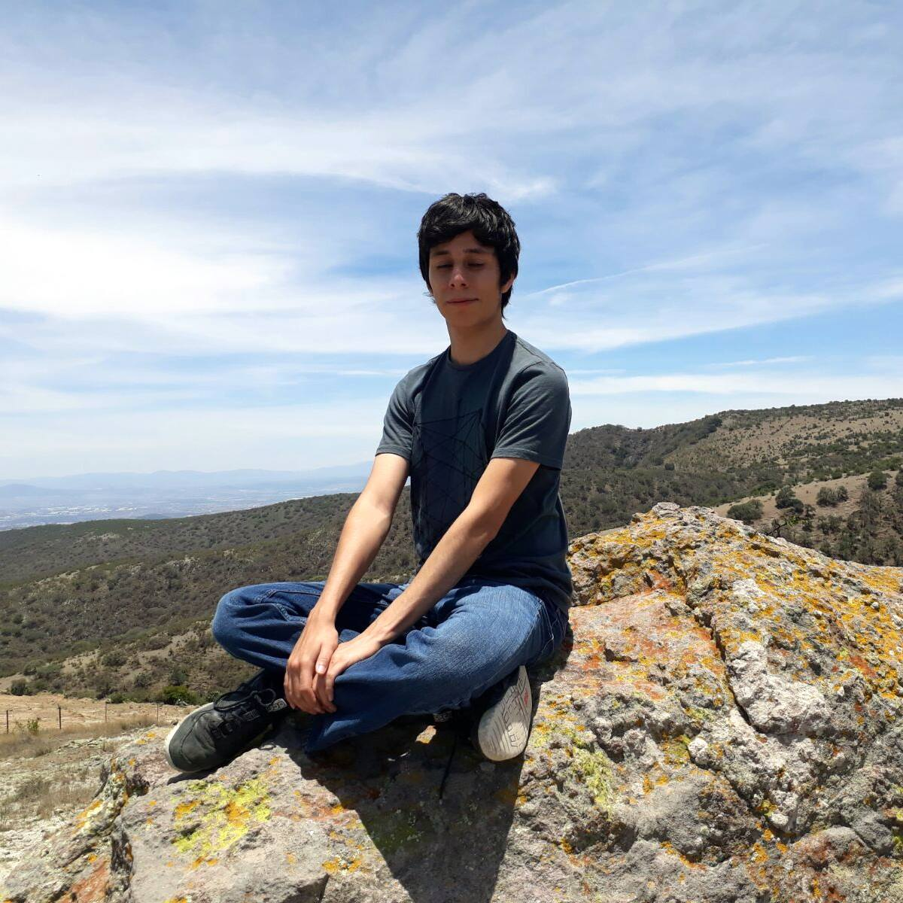

The Team
The dream team that created this project is a group of three mexican 🇲🇽❤️ guys that hard worked during months to make possible this project.
Alejandro Neri
Algorithms Exploration
Worked testing different object and face recognition algorithms and it's implementation.

David Ramírez
Real-Time Streaming
Some quick example text to build on the card title and make up the bulk of the card's content.

Filiberto Vazquez
Standard Algorithms
The standard algorithms by Texas Instruments were followed to achieve human body detection